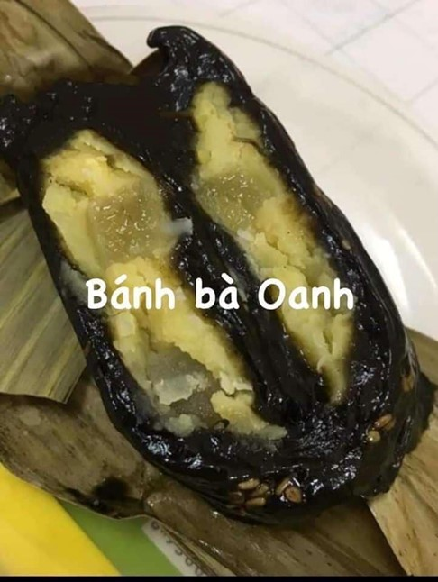
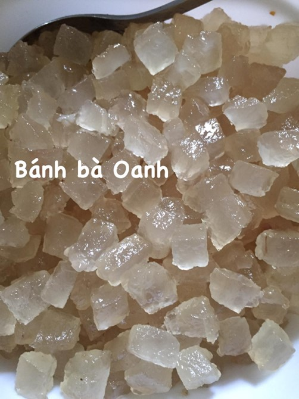
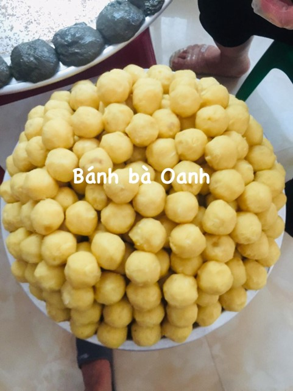
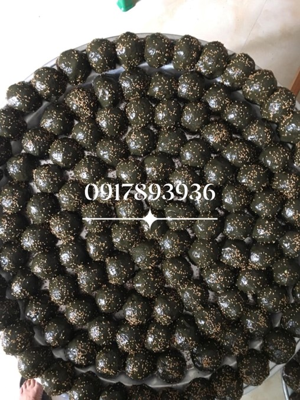
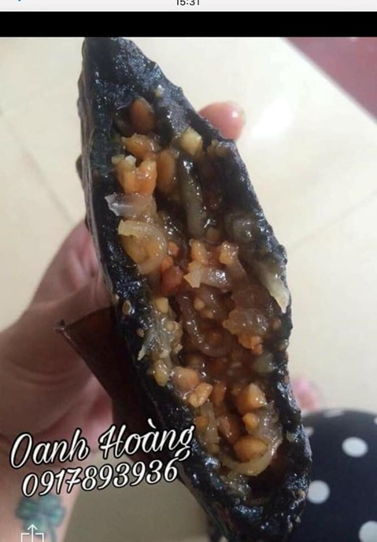
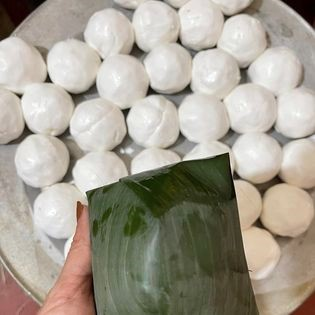
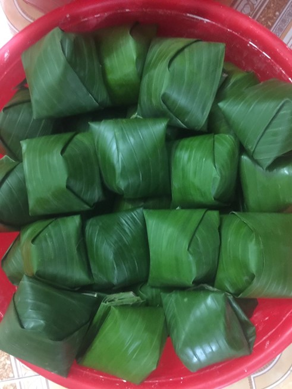
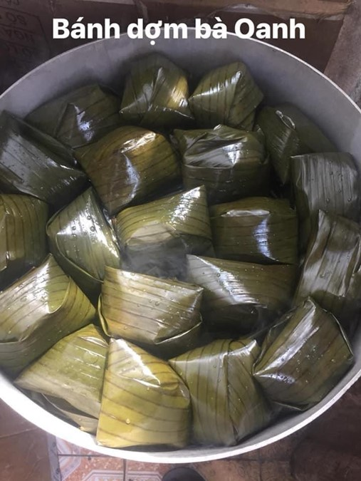
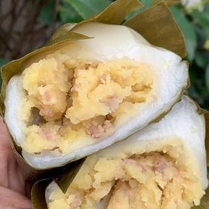
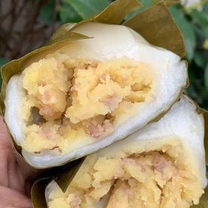

Bánh gai, bán dợm

Đối với người Cao Bằng, ngày Rằm tháng Bảy không chỉ có ý nghĩa như ngày lễ Vu lan báo hiếu cha mẹ, ông bà, tổ tiên đã khuất hay là ngày xá tội vong nhân (cúng cô hồn), mà còn có ý nghĩa như một ngày tết lớn thứ hai trong năm. Và nếu như Tết Nguyên Đán không thể không có bánh chưng, thì tết Rằm tháng Bảy ở Cao Bằng không thể thiếu 2 món bánh truyền thống: Bánh gai và bánh rợm.
Bánh gai Cao Bằng gắn liền với một truyền thuyết lưu truyền trong dân gian, rằng: Vào thời vua Lý Thái Tông (đầu thế kỷ 10), giặc Tống sang xâm lược nước ta, thủ lĩnh của người Cao Bằng là Nùng Trí Cao đã chỉ huy quân dân vùng biên ải đánh giặc. Đồng bào làm bánh gai cho các chiến binh đem theo làm lương khô ra trận. Bánh được xâu thành từng cặp để đeo bên người cho tiện, nên người Tày, Nùng gọi là pẻng tải (bánh đeo).
  Để có một chiếc bánh gai ngon, hấp dẫn phải trải qua nhiều công đoạn chế biến khá cầu kỳ. Lá gai là nguyên liệu không thể thiếu để làm nên món bánh này. Lá được chọn dùng phải là loại lá bánh tẻ, đem về tước bỏ gân lá, phơi khô. Sau đó, lá được đem ninh nhừ rồi vớt ra rửa sạch, vắt khô, giã và sao lên cho khô tơi.
Đường phên được đun sôi rồi trộn với lá gai thành một thứ mật sền sệt. Gạo làm bánh là loại gạo nếp ngon, không lẫn tẻ, được ngâm chừng một buổi cho no nước và xay thành bột, đựng trong túi vải, ép chặt cho ráo nước. Bột sau khi ép được trộn với nước đường và lá gai rồi đem giã trong cối đá cho thật nhuyễn. Bột giã xong có màu xanh đen, mịn, dẻo quánh. Nhân bánh được làm từ đỗ xanh đãi sạch, đồ chín, nghiền mịn, trộn với đường, thịt mỡ khổ luộc thái hạt lựu. Khi gói, bột bánh được chia thành các phần đều nhau, cho nhân đỗ vào giữa phần bột và bao kín lại, lăn qua 1 lớp vừng bên ngoài. Bánh gai được gói bằng nhiều lớp lá chuối khô đã được phơi nắng và lau sạch. Bánh sau khi gói được cho vào nồi hấp trong khoảng 2 giờ là chín. Bánh gai chín có màu đen bóng, mịn màng, vừa giòn vừa mềm, có vị ngọt sắc của đường, vị dẻo thơm của nếp và lá gai, vị bùi của nhân đỗ. Tùy theo sở thích của từng người mà nhân bánh gai có thể thay đổi, như nhân vừng lạc hoặc bánh chay (không nhân).
Các công đoạn làm bánh rợm cũng tương tự nhưng có phần đơn giản hơn bánh gai. Bột nếp và đậu xanh là hai nguyên liệu chính của bánh rợm. Gạo nếp phải chọn loại ngon, trắng thơm, xay thành bột mịn rồi lèn chặt. Đỗ xanh ngâm đãi sạch, đồ chín rồi giã nhuyễn. Thịt nạc băm nhỏ xào với một chút gia vị, hạt tiêu và mỡ rồi trộn với đỗ làm nhân bánh. Cũng có thể đem xào thơm thịt lợn băm nhỏ với mộc nhĩ, hạt tiêu, tẩm ướp gia vị cho đậm đà. Đặt viên nhân vào giữa cục bột rồi lăn tròn.
 Lá gói bánh rợm phải chọn kỹ. Đó là những lá chuối còn tươi xanh, phiến lá rộng, đem rửa sạch, cắt thành từng ô vuông nhỏ vừa đủ bao bọc lấy bánh, rồi quét lớp mỡ óng ả lên mặt trong của lá, làm như vậy bánh rợm sẽ không bị dính và dễ bóc khi ăn. Bánh rợm có thể gói vuông từng chiếc như bánh gai, cũng có thể gói vồng lên như bánh tẻ. Sau khi cho vào nồi hấp khoảng 20 phút là bánh chín. Chiếc bánh được vớt ra trắng mịn, bóng mượt và dẻo thơm.
 

Rằm tháng Bảy là dịp để những người nông dân nghỉ ngơi sau những ngày cày cấy vất vả và sum họp với gia đình bên nồi bánh bánh gai, bánh rợm. Trên bàn thờ cúng gia tiên ngày Rằm tháng Bảy của người Cao Bằng, không thể thiếu bánh gai và bánh rợm, bởi đó là tượng trưng cho những tấm lòng thảo thơm của con cháu dâng lên ông bà, tổ tiên.